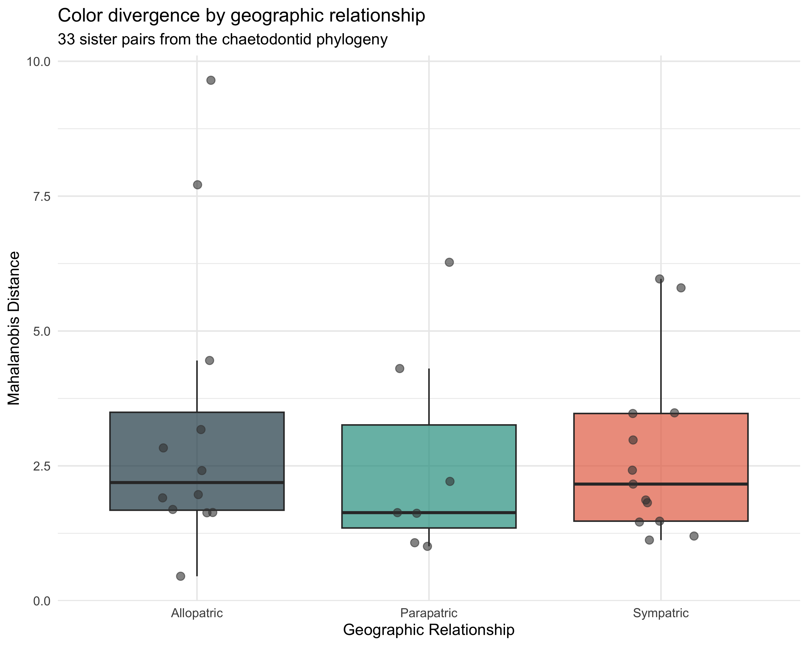

Are sympatric sister species more divergent in color than allopatric pairs?
Tip
Pattern recipe. Tests the character displacement hypothesis using 33 sister pairs from the chaets-divergence project. For each pair, Mahalanobis distance in the 6-dimensional pavo color-pattern space quantifies how different their color patterns are. The prediction is that sympatric sister pairs (those whose ranges overlap) have evolved greater color divergence than allopatric pairs, driven by selection for species recognition or ecological partitioning.
This replaces the original “defense vs conspicuousness” framing because FishBase classifies all chaetodontids as either “harmless” (123 spp) or “reports of ciguatera poisoning” (4 spp) – no defense variation exists for an aposematism test.
Poster outputs.figures/functional-hypothesis-hero.pdf – boxplot comparing Mahalanobis distance between sympatric and allopatric pairs, plus a scatter of color divergence vs range overlap.
What you’re computing
Load pre-computed sister-pair data from the chaets-divergence project: sister_pair_mahalanobis_distances.csv (Mahalanobis distance in pavo color space) and sister_pairs_range_overlap.csv (Simpson overlap coefficient).
Classify pairs as sympatric (Simpson > 0.05), parapatric, or allopatric.
Wilcoxon rank-sum test: Mahalanobis distance in sympatric vs allopatric pairs.
Boxplot + scatter of color divergence vs range overlap.
Warning in cor.test.default(df_scatter$simpson_coef,
df_scatter$mahalanobis_dist, : Cannot compute exact p-value with ties
cat(sprintf("Spearman rho = %.3f, p = %.4f\n", ct$estimate, ct$p.value))
Spearman rho = -0.210, p = 0.2488
Three-way classification
For a finer-grained view, compare across allopatric, parapatric, and sympatric categories.
df3 <- df[df$sympatry_class %in%c("Allopatric", "Parapatric", "Sympatric"), ]df3$sympatry_class <-factor(df3$sympatry_class,levels =c("Allopatric", "Parapatric", "Sympatric"))p3 <-ggplot(df3, aes(x = sympatry_class, y = mahalanobis_dist,fill = sympatry_class)) +geom_boxplot(alpha =0.7, outlier.shape =NA) +geom_jitter(width =0.15, size =3, alpha =0.6, color ="grey25") +scale_fill_manual(values =c("Allopatric"="#264653","Parapatric"="#2a9d8f","Sympatric"="#e76f51" )) +labs(x ="Geographic Relationship", y ="Mahalanobis Distance",title ="Color divergence by geographic relationship",subtitle ="33 sister pairs from the chaetodontid phylogeny") +theme_minimal(base_size =14) +theme(legend.position ="none")print(p3)

Color divergence across three sympatry categories.
kt <-kruskal.test(mahalanobis_dist ~ sympatry_class, data = df3)cat(sprintf("Kruskal-Wallis chi-sq = %.2f, p = %.4f\n", kt$statistic, kt$p.value))
Kruskal-Wallis chi-sq = 0.90, p = 0.6384
Hero PDF
`geom_smooth()` using formula = 'y ~ x'
Warning in grid.Call.graphics(C_text, as.graphicsAnnot(x$label), x$x, x$y, :
for 'Sister pairs — character displacement prediction' in 'mbcsToSbcs': -
substituted for — (U+2014)
Character displacement predicts that sympatric sister species evolve more divergent color patterns to facilitate species recognition on the reef. If the Wilcoxon test is significant, sympatric pairs have greater Mahalanobis distances than allopatric pairs in the 6D color space, supporting the hypothesis. The scatter of color divergence vs Simpson overlap tests whether the effect scales continuously with the degree of range overlap.
Chaetodontidae are an ideal system for this test because many sister pairs span the sympatry/allopatry spectrum, and their conspicuous color patterns are thought to function partly in species recognition (Hemingson & Bellwood 2018). The 33 pairs provide moderate power – cross-family meta-analyses would strengthen the result.
Output files for the poster
File
What to use it for
figures/functional-hypothesis-hero.pdf
2-panel: boxplot (sympatric vs allopatric) + scatter (divergence vs overlap)